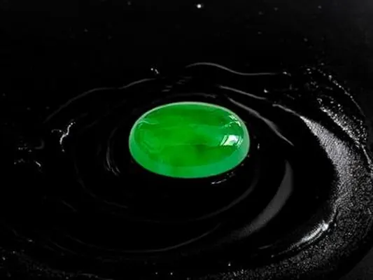

紫羅蘭與多色翡翠：綠以外的繽紛
翡翠不只有綠——紫的浪漫、紅的熱烈、墨的深沉，顏色比你想的繽紛。

核心定義
翡翠的顏色來自不同致色元素：綠（鉻/鐵）、紫（錳）、黃紅（鐵的氧化）、黑（鐵與鉻含量極高）——「翡翠」三個字，其實是一個彩虹家族。常見非綠色系：紫羅蘭、黃翡、紅翡、墨翠，以及多色共存的「春帶彩」「福祿壽」。
紫羅蘭（lavender）翡翠的紫來自錳，色調從粉紫到茄紫；黃翡與紅翡是鐵氧化（褐鐵礦）的次生色；墨翠在光照下黑、透光下顯綠；「春帶彩」是紫綠並存、「福祿壽」是綠紅紫三色——多色翡翠是自然的幸運巧合，稀有而珍貴。
特徵與分類
| 顏色 | 致色 | 稀有度 |
|---|---|---|
| 帝王綠 | 鉻 | 極稀 |
| 紫羅蘭 | 錳 | 稀 |
| 黃/紅翡 | 鐵氧化 | 較常見 |
| 墨翠 | 鐵鉻高 | 稀有 |
| 春帶彩 | 錳＋鉻 | 極稀 |
紫羅蘭翡翠的行情：粉紫明亮者佳、茄紫深沉者次之；「紫眼睛」級（濃紫且種水好）稀有。黃翡講「雞油黃」、紅翡講「血珀紅」，濃豔均勻者佳。墨翠講「打燈綠」——透光下的綠越鮮豔越好。
科學原理
紫羅蘭的紫來自錳離子（Mn）取代晶格鋁位——但錳離子在強光下可能褪色（不穩定），紫羅蘭是「怕光的美人」。黃紅翡是次生氧化：鐵氧化成褐鐵礦滲入裂隙，形成黃到紅的漸層。
墨翠的「黑」是視覺錯覺：鐵鉻含量極高的翡翠在反射光下呈黑色，但透光時綠光穿透——「打燈見綠」是墨翠的招牌。多色翡翠（春帶彩等）則是不同致色元素在不同區域結晶的幸運結果。
鑑定與鑑別方法
- 看色調：紫羅蘭粉紫vs茄紫、黃翡雞油黃vs土黃
- 透光檢查：墨翠打燈見綠
- 查處理：部分紫羅蘭經染色（C貨）
- 自然光看色：避免黃燈誤導
- 證書確認顏色名稱與處理狀態
市場行情與保養建議
行情上，非綠翡翠的市場正在崛起：紫羅蘭（尤其「紫眼睛」）近年受年輕人追捧，價格上漲；墨翠在男性市場受歡迎；春帶彩、福祿壽因稀有而具收藏價值。整體而言，「綠為王」的格局未變，但繽紛色系的市場日益壯大。
提醒：紫羅蘭與黃紅翡都要查處理——紫羅蘭怕染色（C 貨）、黃紅翡有加熱改色之例。證書標示，是買繽紛翡翠的安全帶。
常見誤區
紫羅蘭、黃紅翡、墨翠、白色（冰白）都是翡翠——顏色是致色元素的結果，不是翡翠的門檻。
紫要「濃而亮」：茄紫深沉但不亮、粉紫亮但偏淡——頂級是「濃亮兼備」的粉紫。深到發黑的紫，反而不值錢。
冷知識
強光可能讓紫羅蘭的錳致色褪色——收藏紫羅蘭，要避免長時間直曬，這是它嬌貴的科學原因。
墨翠其實是極深的綠——打燈見綠的那一刻，它才露出真面目。黑的表面，藏著綠的心。
反直覺觀點
紫色翡翠的「濃亮平衡」難以量化，價格判斷門檻高——懂紫的人少，紫的價格反而容易被低估或高估。
春帶彩、福祿壽的多色分布是自然奇蹟——「雜」到恰到好處，反而成為億中選一的收藏。